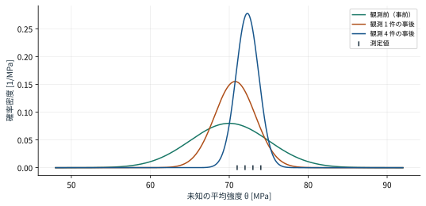
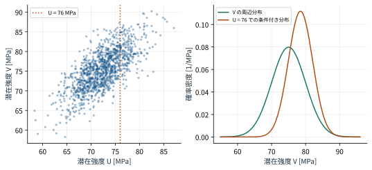

第2章 確率・統計・ベイズ推論の基礎
処理温度を固定して試片を測ると、引張強度にはばらつきが出ます。この章では、繰り返し測った結果を使って未知の平均強度を推定します。さらに、別々の温度での強度を共に考え、一方を知った後のもう一方の分布を計算します。平均・分散・共分散・条件付き確率の意味が分かると、第4章の予測式を読みやすくなります。
2.1 測定から未知の平均を推定する
同じ温度で4回測り、\(71,73,72,74\) MPaを得たとします。この小例では、1回の測定値は未知の平均強度 \(\theta\) の周りで変動し、誤差の標準偏差は既知の3 MPaとします。測定前の \(\theta\) は平均70 MPa、標準偏差5 MPaの正規分布で表すことにします。
第2章のNotebookでは、最初に4件から事後分布の平均と標準偏差を計算します。1 / sd**2 は分散の逆数で、精度と呼びます。第2.5節でこの計算を導きます。
import numpy as np
y = np.array([71.0, 73.0, 72.0, 74.0])
prior_mean, prior_sd = 70.0, 5.0
noise_sd = 3.0
v = 1 / (1 / prior_sd**2 + len(y) / noise_sd**2)
m = v * (prior_mean / prior_sd**2 + y.sum() / noise_sd**2)
print(m, np.sqrt(v))
| 使用した観測数 | 未知の平均強度の分布の平均 [MPa] | 同じ分布の標準偏差 [MPa] |
|---|---|---|
| 0 | 70.000 | 5.000 |
| 1 | 70.735 | 2.572 |
| 4 | 72.294 | 1.437 |
色の付いた曲線は、測定結果から推定する未知の平均 \(\theta\) に対する分布です。観測を追加すると、平均はデータの中心に近づき、幅が狭くなります。測定機器の精度を表す3 MPaは、この計算では最初から最後まで固定しています。
2.2 確率変数・期待値・分散・共分散
試験の結果として得られる量を確率変数と呼び、大文字 \(Y\) で表します。実際に観測された数値を小文字 \(y\) で表します。連続な変数では、例えば \(P(70\leq Y\leq 75)\) のように、区間に入る確率を密度 \(p_Y\) の積分 \(\int_{70}^{75}p_Y(t)\,dt\) で求めます。密度の単位は元の量の逆数です。MPaで測った強度に対する密度の単位は \(1/\mathrm{MPa}\) です。
平均を \(\mu_Y=\mathbb E[Y]\) と書きます。これは分布に従う値の加重平均です。連続なら \(\mu_Y=\int t\,p_Y(t)\,dt\) です。平均からのばらつきは、分散 \(\mathrm{Var}(Y)=\mathbb E[(Y-\mu_Y)^2]\) で表せます。分散の平方根が標準偏差で、元の測定値と単位が同じです。
二つの変数 \(U,V\) の共分散は、平均からのずれを掛け合わせた期待値です。
\[ \mathrm{Cov}(U,V)=\mathbb E[(U-\mu_U)(V-\mu_V)] . \]
共分散の符号は、平均から同じ向きにずれるか、反対の向きにずれるかの傾向を表します。標準偏差 \(\sigma_U,\sigma_V\) がともに正のとき、\(\rho=\mathrm{Cov}(U,V)/(\sigma_U\sigma_V)\) が相関係数です。分散と共分散は、まとめて次の行列で表せます。
\[ \Sigma= \begin{bmatrix} \sigma_U^2 & \rho\sigma_U\sigma_V \\ \rho\sigma_U\sigma_V & \sigma_V^2 \end{bmatrix}. \]
独立で二次モーメントが有限なら、共分散はゼロです。逆向きの結論には追加の仮定が要ります。例えば同時正規分布では、共分散ゼロから独立を導けます。この性質を第2.5節と第4章で使います (Rasmussen と Williams 2006年, 付録A.2; Murphy 2022年)。
2.3 正規分布と多変量正規分布
一つの量の正規分布は \(Y\sim\mathcal N(\mu,\sigma^2)\) と書きます。\(\sigma>0\) のとき、密度は
\[ p_Y(t)=\frac{1}{\sqrt{2\pi}\sigma} \exp\!\left(-\frac{(t-\mu)^2}{2\sigma^2}\right) \]
です。\(Z=(Y-\mu)/\sigma\) により、平均0、分散1の標準正規分布に変換できます。標準正規分布の累積分布関数を \(\Phi\) とすると、\(\Phi(z)=P(Z\le z)\) です。例えば \(z=1.96\) は累積確率0.975付近にあり、平均の左右それぞれに標準偏差の約1.96倍を取る区間に、分布の約95%が入ります。この分位点は第4章の帯に、\(\Phi\) は第5章の改善確率に使います。
\(U,V\) を二つ並べた確率ベクトルが二変量正規分布に従う場合、平均ベクトルと上の共分散行列で同時分布が決まります。共分散が非ゼロの場合は、一方の値を知ることで他方の分布も変わり得ます。二つの周辺分布は、それぞれの平均と対角成分で決まります。同時分布の情報を使うときは、対角以外の共分散も必要です。
2.4 条件付き確率とベイズの定理
事象 \(B\) が起きたという条件の下での \(A\) の確率を \(P(A\mid B)\) と書きます。\(P(B)>0\) のとき \(P(A\mid B)=P(A\cap B)/P(B)\) です。\(P(A)>0\) も満たせば、同じ同時確率を二通りに展開して
\[ P(A\mid B)=\frac{P(B\mid A)P(A)}{P(B)} \tag{2.1}\]
を得ます。例えば100個のうち20個が目標強度を満たすとします。簡易判定は、達成品の90%、未達品の10%を陽性とします。陽性は達成品18個と未達品8個の計26個です。陽性が出た品が達成品である確率は \(18/26\approx0.692\) です。判定精度だけでなく、判定前にどれだけ達成品があるかが効きます。
未知量 \(\theta\) が連続で、データ \(\mathbf y\) を観測した場合は、確率に対応する密度を使います。
\[ p(\theta\mid\mathbf y)= \frac{p(\mathbf y\mid\theta)p(\theta)} {\int p(\mathbf y\mid t)p(t)\,dt} . \]
\(p(\theta)\) を事前分布、観測値 \(\mathbf y\) を固定して \(\theta\) の関数として見た \(p(\mathbf y\mid\theta)\) を尤度、更新結果 \(p(\theta\mid\mathbf y)\) を事後分布と呼びます。分母が有限かつ正であるとき、この分母で割ると事後密度の面積が1になります。未知量の分布と、新しい測定値の予測分布を作る場合には、それぞれについて何に条件付けているかを明示します (Murphy 2022年)。
2.5 正規分布で二つの更新を計算する
同じ温度で測定を追加する
事前を \(\theta\sim\mathcal N(m_0,v_0)\) とします。\(v_0,\tau^2>0\) とし、\(\theta\) が与えられた下で \(Y_i\) は互いに独立に \(\mathcal N(\theta,\tau^2)\) に従うとします。\(n\) 件の観測値を \((y_1,\ldots,y_n)\) とすると、事後密度は \(\theta\) に依存しない定数を除いて
\[ p(\theta\mid\mathbf y)\ \propto\ \exp\!\left[-\frac12\left\{ \frac{(\theta-m_0)^2}{v_0} +\sum_{i=1}^n\frac{(y_i-\theta)^2}{\tau^2} \right\}\right]. \]
\(\theta^2\) の係数を \(A=1/v_0+n/\tau^2\)、\(\theta\) の係数を \(-2B\)、\(B=m_0/v_0+\sum_i y_i/\tau^2\) とおきます。\(A\theta^2-2B\theta=A(\theta-B/A)^2-B^2/A\) です。指数の中が正規分布の形になり、次の平均 \(m_n\) と分散 \(v_n\) が得られます。
\[ v_n=\frac{1}{1/v_0+n/\tau^2}, \qquad m_n=v_n\left(\frac{m_0}{v_0}+\frac{\sum_{i=1}^n y_i}{\tau^2}\right). \tag{2.2}\]
精度 \(1/v_n\) は、事前の精度と各観測が持ち込む精度の和です。\(n>0\) なら事後平均は、事前平均と標本平均を精度で混ぜた値です。データが増えると分散は小さくなります。同じ件数でも、測定誤差が大きいと1件あたりの精度が下がります。このように事前も事後も正規分布になる関係を共役と呼びます。
同じ温度でもう一回測る場合は \(Y_{\mathrm{new}}=\theta+\varepsilon_{\mathrm{new}}\) とします。新しい正規誤差 \(\varepsilon_{\mathrm{new}}\sim\mathcal N(0,\tau^2)\) がこれまでの観測と \(\theta\) から独立なら、新しい測定値の予測分布は \(\mathcal N(m_n,v_n+\tau^2)\) です。例えば冒頭の4件では、未知の平均と新しい測定値の分布は同じ平均を持ちます。
未知の平均の事後標準偏差は 1.437 MPa、新しい測定値の予測標準偏差は 3.326 MPa です。次の測定の誤差を加えるため、予測分布の方が広くなります。
第4章では同じ区別を、温度ごとの潜在強度と新しい測定値について行います。
別の温度の潜在強度を予測する
潜在強度 \(U,V\) が二変量正規分布に従い、\(U\) の分散を \(\sigma_U^2>0\)、\(V\) の分散を \(\sigma_V^2\)、共分散を \(c\) とします。\(U=u\) と分かったときの \(V\) を考えます。残差 \(R=V-\mu_V-(c/\sigma_U^2)(U-\mu_U)\) を作ると、\(\mathrm{Cov}(R,U)=c-(c/\sigma_U^2)\sigma_U^2=0\) です。\(R,U\) は同時正規なので独立です。\(R\) の平均は0、分散は \(\sigma_V^2-c^2/\sigma_U^2\) です。したがって
\[ V\mid U=u\sim \mathcal N\!\left( \mu_V+\frac{c}{\sigma_U^2}(u-\mu_U),\ \sigma_V^2-\frac{c^2}{\sigma_U^2} \right). \tag{2.3}\]
共分散 \(c\) が正なら、\(U\) が平均より高いという情報で \(V\) の予測平均も上がります。分散から引く項 \(c^2/\sigma_U^2\) は非負で、情報によって予測の幅が減ります。可逆な共分散行列を持つ連続な場合には、同時密度を \(U\) の周辺密度で割って条件付き密度を求めても同じ結果になります (Rasmussen と Williams 2006年, 付録A.2)。

右図では、\(V\) の平均が75から 78.50 MPa、標準偏差が5から 3.57 MPa に変わりました。条件付き密度の式を、同時密度を周辺密度で割る計算と照合しています。
この小例では \(U\) の値を正確に知ったとしています。実験で \(U\) をノイズ付きで測った場合は、条件に使う観測の分散が変わります。第4章は、この条件付けを複数の測定と複数の予測位置へ広げます。
2.6 適用条件と演習
繰り返し測定の例は、誤差の独立性と既知の測定分散を仮定しています。装置の温度がゆっくり変化し、測定誤差が連続して同じ方向に寄るときは、独立として計算した事後分布の幅が狭くなりすぎることがあります。二温度の例の相関は、二つの強度についての同時分布を表します。温度条件を変える介入の効果を相関だけから推定することはできません。
- 確認。 観測が \(y_1=71\) の1件であるとき、式 2.2 から事後平均と標準偏差を求めましょう。
- 操作。 Notebookで
noise_sdを3から6に変え、観測4件の事後平均と標準偏差が変わる理由を説明しましょう。 - 発展。 二温度の相関を \(0\)、\(-0.7\) に変えます。同じ \(U=76\) の情報に対し、\(V\) の平均と分散はどうなりますか。
次章へ。 いくつもの温度で同時に予測するには、任意の二つの温度の共分散を計算するルールが必要です。第3章では、そのルールをカーネルで定めます。